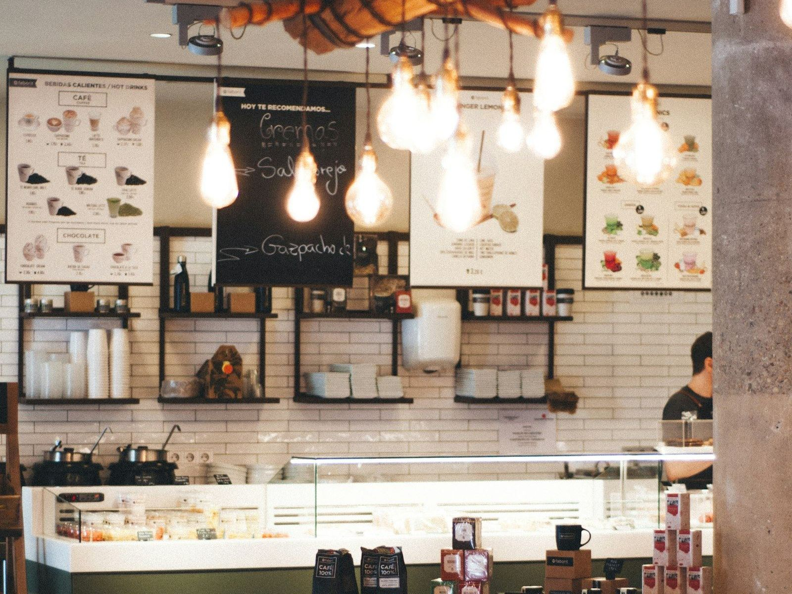
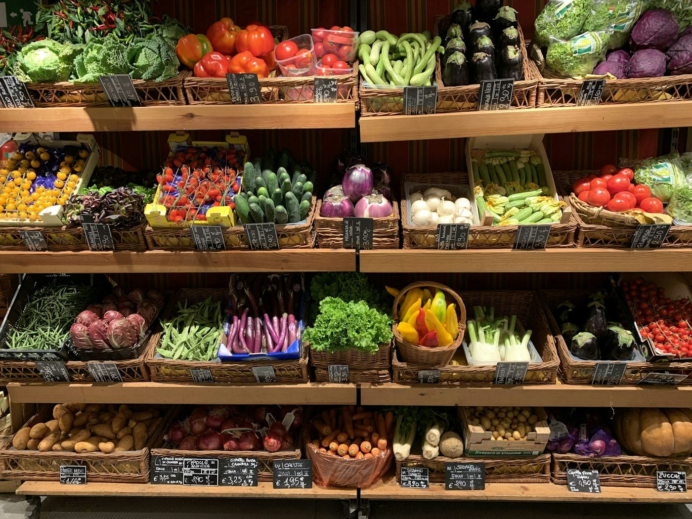
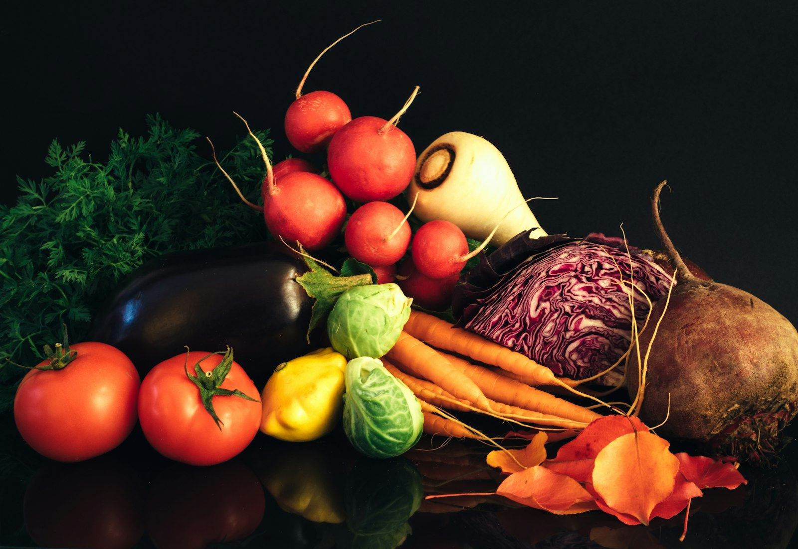
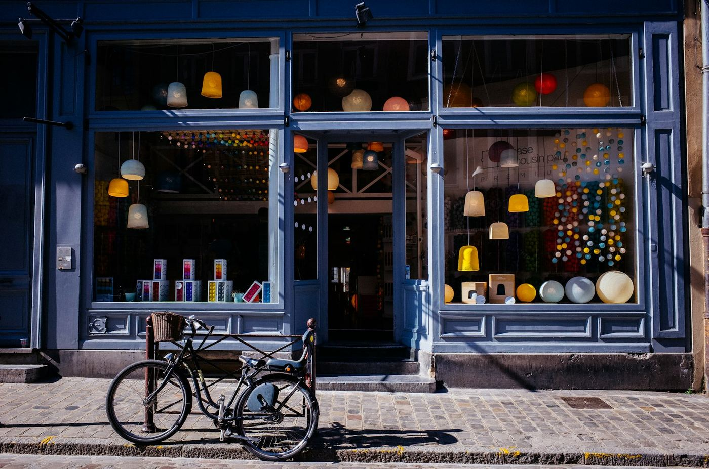

Centro Histórico de Curitiba · desde 1983
Café moído na hora.
Queijo da colônia.
Pão que ainda está quente.
Uma mercearia de bairro a dois passos do Calçadão da XV, com produtos do interior do Paraná e atendimento que chama você pelo nome.
Verificando horário…

Nossa história
Quarenta anos de balcão, caderninho e conversa boa.
Quando o Seu Zé ergueu as portas de ferro pela primeira vez, o Centro de Curitiba tinha outro ritmo. O que não mudou foi o cheiro do café moído na hora, as prateleiras de madeira e os produtos que chegam toda semana de Witmarsum, Colombo, Castelhanos e do Norte Pioneiro.
Hoje, o neto Lucas trouxe a mercearia para a internet. O balcão continua o mesmo.
Ler a história completaDa colônia para o balcão
Promoções da semana

“Quem quer comprar, vem até a loja.”

Visite
Perto de tudo no Centro.
Endereço
Rua Marechal Deodoro, 452 — CentroCuritiba/PR · CEP 80010-010
A duas quadras do Calçadão da XV, entre a Praça Osório e a Boca Maldita. Estações-tubo Praça Osório e Rui Barbosa a menos de 10 min a pé.
Abrir no Google MapsHorário
- Segunda07:00 — 19:00
- Terça07:00 — 19:00
- Quarta07:00 — 19:00
- Quinta07:00 — 19:00
- Sexta07:00 — 19:00
- Sábado07:00 — 14:00
- Domingo e feriadosFechado